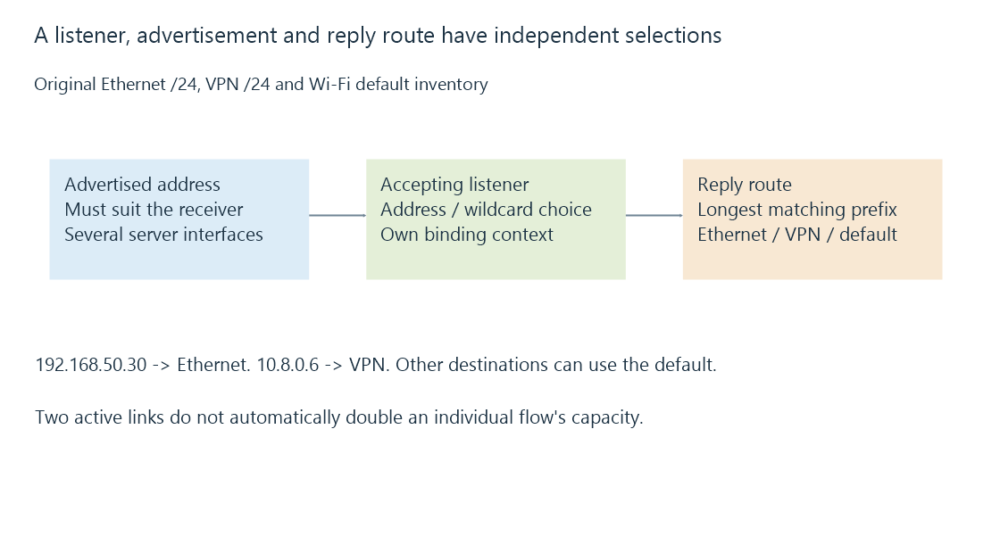

Multiple network interfaces and selected server paths
Multiple network interfaces add address, listener, route and advertisement choices whose independent selection determines the server path seen by each client.
An Emby machine can have Ethernet, Wi-Fi and a VPN interface at the same time. It can listen through more than one address while using one selected route for a particular reply.
The address advertised to an app and the interface chosen by the operating system answer different questions.
A route chooses the reply destination path
Use this original reduced inventory:
{
"addresses": {
"ethernet": "192.168.50.20",
"wifi": "192.168.60.20",
"vpn": "10.8.0.1"
},
"routes": [
{"prefix": "192.168.50.0/24", "path": "ethernet"},
{"prefix": "10.8.0.0/24", "path": "vpn"},
{"prefix": "0.0.0.0/0", "path": "wifi"}
]
}
A reply to 192.168.50.30 matches the Ethernet /24. A reply to 10.8.0.6 matches the VPN /24. Another destination can use the Wi-Fi default under this model.

A low-cost/default path does not replace a more-specific route merely because both interfaces are active.
Listening has its own interface context
A listener can bind to a particular address or a supported wildcard selection. The choice establishes where the service can accept traffic.
It does not tell the route table to send every reply through that same physical interface. The source address, policy routing and platform/socket behavior can add further context.
An asymmetric path can encounter a gateway lacking expected state or a policy that rejects it. “Both interfaces are connected” is not enough to establish a working round trip.
Advertisement must suit the receiving client
An app on the Ethernet realm may not have a route to the server’s VPN address. Reporting the VPN address can therefore produce a discovery candidate the app cannot use.
Emby’s documented local-address override concerns the endpoint it presents to clients. It does not install a client route or change every operating-system binding decision.
A hostname can also have several address answers. The client’s family/address choice needs to be retained when comparing outcomes.
Several links do not automatically aggregate one flow
Having two one-Gbit/s interfaces does not make every individual stream a two-Gbit/s connection.
Aggregation, failover, multipath or another selected implementation can define additional behavior. The ordinary route model chooses a path for its particular destination/context.
A measurement tool binding to an interface can help isolate a declared path, but the resulting test still needs its actual addresses and routes identified.
Observe all four selections together
For a missing or misclassified Emby connection, retain the advertised endpoint, accepting listener, chosen return route and client context the application interprets.
See Also
- IP addresses and reachable interfaces
- Subnets, CIDR and matching routes
- VPN routing, overlapping prefixes and split tunneling
- Forwarded client addresses and trusted proxy context